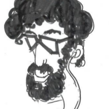

Víctor
Gerardo

Sergio
Luis
Xavi
Miguel Ángel
Nuestros principios
Slow programming
Nosotros hacemos ‘Slow programming’ que consiste en hacerlo lo mejor posible en vez de hacerlo lo mas rápido posible, es una cuestión de calidad no de cantidad. Dándonos tiempo para la reflexión y la autocrítica, poniendo el foco en la calidad y no en el volumen es como podemos generar el maximo de valor; detectando el waste y liberando esos recursos para nuestra vida y profesion, adquiriendo mas valor como individuales porque no estaría bien que mientras le damos valor a nuestro cliente perdiéramos el nuestro.
Verás esto reflejado en nuestras costumbres como la de solo tener un proyecto cada vez para poder enfocar plenamente en su éxito. En la parquedad de nuestros MVP’s directos a la propuesta de valor y su validación.